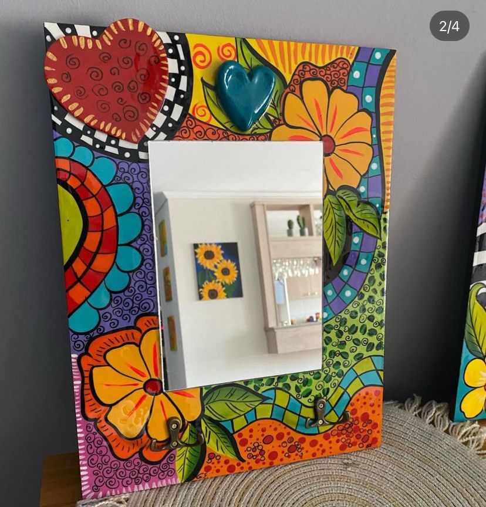

El taller ofrece una experiencia inmersiva de pintura
que explora la cultura mexicana a través de
símbolos icónicos como catrinas y altares,
guiando a los participantes en técnicas para capturar su autenticidad.
Catálogo de nuestros productos
- 
El taller es una experiencia inmersiva diseñada para explorar y
plasmar la rica y vibrante cultura mexicana a través del arte de la
pintura. Los participantes tendrán la oportunidad de sumergirse en el
fascinante mundo de elementos icónicos como corazones, catrinas,
altares y muchos otros símbolos que encapsulan la esencia y la belleza
de México.
Durante el taller, los asistentes serán guiados paso a paso en técnicas de pintura que les permitirán capturar la esencia y la autenticidad de cada elemento cultural.
Desde la intricada decoración de los altares hasta la elegancia melancólica de las catrinas, cada pincelada será una exploración de la rica historia y la diversidad artística de México.
Además de la experiencia de pintura, los participantes tendrán la oportunidad de adquirir decoraciones mexicanas únicas y auténticas a través de Instagram.
Desde coloridos textiles hasta intrincadas artesanías, esta plataforma ofrecerá una ventana a la artesanía mexicana para aquellos que deseen llevar consigo un pedazo de esta cultura vibrante a sus hogares.
En resumen, el taller no solo será una oportunidad para aprender y crear, sino también para sumergirse en la belleza y la profundidad de la cultura mexicana, tanto a través de la pintura como de la adquisición de auténticas decoraciones que celebran la riqueza de este patrimonio cultural.
Durante el taller, los asistentes serán guiados paso a paso en técnicas de pintura que les permitirán capturar la esencia y la autenticidad de cada elemento cultural.
Desde la intricada decoración de los altares hasta la elegancia melancólica de las catrinas, cada pincelada será una exploración de la rica historia y la diversidad artística de México.
Además de la experiencia de pintura, los participantes tendrán la oportunidad de adquirir decoraciones mexicanas únicas y auténticas a través de Instagram.
Desde coloridos textiles hasta intrincadas artesanías, esta plataforma ofrecerá una ventana a la artesanía mexicana para aquellos que deseen llevar consigo un pedazo de esta cultura vibrante a sus hogares.
En resumen, el taller no solo será una oportunidad para aprender y crear, sino también para sumergirse en la belleza y la profundidad de la cultura mexicana, tanto a través de la pintura como de la adquisición de auténticas decoraciones que celebran la riqueza de este patrimonio cultural.